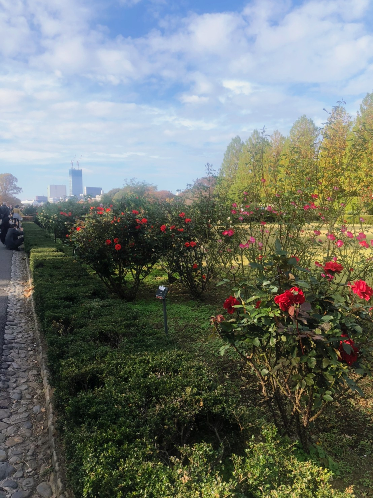

新宿御苑散歩
～都心のオアシス～
11/07 2021
カテゴリー：通常散歩
今回はいつもとは違った散歩をしてきました。何が違うかというと、本サークルの通常散歩ではお金のかからない場所を散歩する（公道や公共施設、無料で入館できる商業施設など）のですが、ついに入園料が発生する新宿御苑を散歩してきました。
旧御凉亭(台湾閣)からの景色はとても良かったです。
自然豊かな光景が広がっていますが、一応ここ新宿区と渋谷区です。大都会新宿の近くのはずなのにこんなに広大な自然を味わえるとは… 新宿の魅力をさらに知ることが出来ました。
大都会新宿には温室もあるとは驚きです。久々に食虫植物を鑑賞しました。サボテンがいたり、人が乗っても沈まない大きな葉っぱがあったりと都会の暮らしをしている中では体験することのできない緑のパワーを感じることが出来ました。
新宿御苑内にあるバラ花壇には数多くのバラが美しい姿を見せており、数多くの人々の心を癒しているのでありました。
← 次の記事 前の記事 →